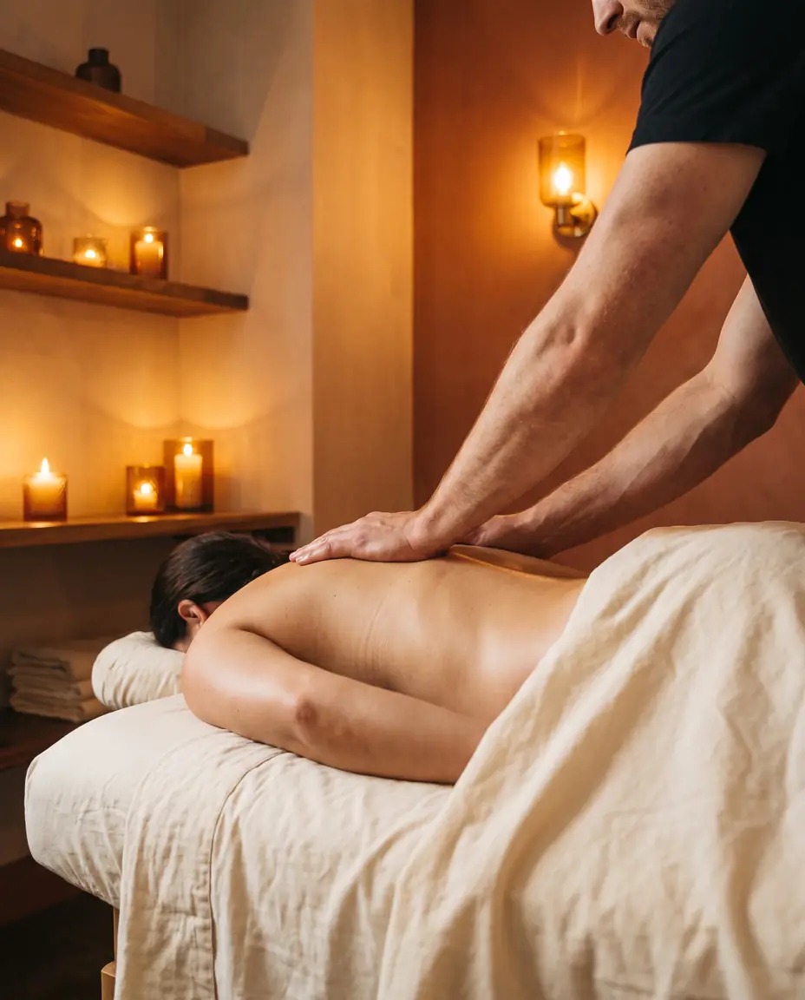

Ten Minutes South of 21st.
Massage Near Sugar House, Salt Lake City
Sugar House is 4 miles from J Massage SLC. Take 21st South west to 200 West and you are at the studio in roughly 10 minutes. Utah-licensed therapists, deep tissue to Swedish to sports massage, open every day from 10am to 10pm.

Who Travels from Sugar House
A Neighborhood That Runs Hard
Sugar House has roughly 35,000 residents, with 88% employed in professional or administrative roles and a median household income around $111,000 (2024 data). That profile describes people who sit at desks for long hours, commute, and then try to decompress in one of Salt Lake's most walkable neighborhoods. Sugar House Park draws consistent runners, cyclists, and weekend athletes who put genuine mileage on their bodies. Westminster University brings faculty, graduate students, and staff who carry the particular physical toll of academic work. Sustained computer posture, low movement, and accumulated tension in the neck and upper back.
The common thread across all of them is a lifestyle that creates physical demand and limited time to address it. A professional who runs Sugar House Park three mornings a week needs real recovery, not just a relaxation spa. A Westminster faculty member carrying chronic shoulder tension from years of lecturing needs structural work, not a hot-stone treatment with candles. J Massage SLC is built for exactly that kind of client: people who want results, understand the difference between therapeutic and cosmetic bodywork, and need a studio that is close enough to actually use on a regular schedule.
Transparent Pricing
Specialist-Level Work. Accessible Rates.
Our therapists are trained in structural bodywork that rivals clinics charging two to three times our rates. Prices are approximate, confirm at booking.
The complete treatment. Time to assess, map, and work through the primary tension zones with the depth your session demands.
Book This SessionFor complex, full-body tension patterns. Time to address multiple problem areas thoroughly and close with proper integration.
Book This SessionThe full two hours for deep, layered work. Multiple regions addressed without rushing, with time for the tissue to release and integrate.
Book This Session* Prices are approximate estimates. Please confirm exact pricing when you book. Gift cards available, a gift that actually helps someone feel better.
Why Make the Drive from Sugar House
Four Miles for the Right Work
Most things worth doing in Salt Lake require a short drive. This one pays off in ways that stay with you.
The Short Commute That Pays Off
Sugar House sits about 4 miles from 677 S 200 W. Via 21st South to 200 West, you are at the studio in roughly 10 minutes. Most Sugar House residents spend more time picking a restaurant on 21st than it takes to get here.
The Right Work for Active Clients
Sugar House Park runners and cyclists put specific demands on the body. Sports massage, deep tissue, and myofascial work at J Massage are built for exactly that kind of recovery. The tissue responds differently to targeted therapeutic work than to general relaxation massage.
One Studio for the Whole Household
Swedish for stress relief. Deep tissue for chronic tension. Prenatal for expecting families. Couples massage for a shared experience. Every modality is available at one address, which simplifies the logistics for households with different therapeutic needs.
Common Questions
Straight Answers for Sugar House Clients
-
J Massage SLC is at 677 S 200 W Suite #C in downtown Salt Lake City, roughly 4 miles from Sugar House. The most direct route is west on 21st South to 200 West, then a few blocks north to the studio. Under normal traffic, that is about 10 minutes. Evening and weekend trips are typically faster. Parking is available in the building lot and on surrounding streets, so you are not adding search time on top of the commute.
-
Yes. The building has a surface lot accessible from 200 West. Street parking is also available on 200 West and on 700 South nearby. The area is not metered on weekends. Most clients from Sugar House drive and find a spot within a minute or two of the studio entrance, which is in Suite #C at the back of the building.
-
Sports massage is the natural starting point for runners and cyclists. It targets the muscle groups that absorb the most load: hamstrings, IT bands, hip flexors, glutes, and calves. If you carry chronic structural tension on top of athletic strain, deep tissue or myofascial release works well alongside it. Deep tissue addresses long-held compression in muscle bellies; myofascial release works on the fascial restrictions that develop from repetitive movement patterns over time. Your therapist will assess your specific situation at the start of the session and recommend the right approach.
-
There is no student or faculty discount program at this time. What we offer is transparent, flat pricing without hidden fees or tip pressure: 60 minutes from $85, 90 minutes from $125, and 120 minutes from $165. These rates are well below what clinical massage practices in Salt Lake charge for equivalent therapeutic work. Prices are approximate and confirmed at booking. Gift cards are also available if you want to share a session with a colleague or partner.
-
J Massage SLC is open every day from 10am to 10pm. Same-day appointments are available most days, including weekends and holidays. The quickest way to check availability and book is through the online booking link at jmassageslc.com/book, which shows live openings. You can also call (801) 288-1118 directly. For Sugar House residents, the round trip fits inside two to three hours for a 60-minute booking, door to door.
Ten Minutes from Sugar House. Worth Every One.
Same-day appointments most days. SLC's highest-rated studio for therapeutic massage work, open 10am to 10pm, every day.
The Gift That
Actually Gets Used.
No re-gifting. No regrets. A J Massage SLC gift card is the most thoughtful thing you can give, and the most eagerly redeemed. Delivered instantly by email. Never expires.
Choose an Amount
Redeemable for any service or add-on. No expiration date. Email delivery in minutes.